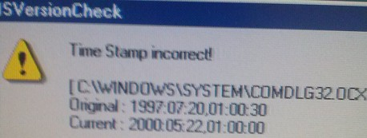
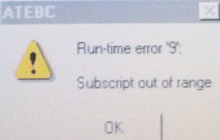

Service History
Subject: Time stamp error after installing MMI
Handler Model: NS-6040
Controller: SRC520 Win95
Date: 30 Jan 2013
Symptom
After ver 12.11 NS6000 MMI software installed in our NS6000, when run NS-6000 software, encountered Time Stamp error.

Action
1. Open C:\NS6000\config\Ver.dat file.
2. Look for affected ( incorrect) line which is shown the pop window.
3. Change the YYYY:MM:DD,HH:MM:SS from Original to current.
Eg: BASE ON YOUR ATTACHED PICTURE.
C:\\WINDOWS\SYSTEM\COMDLG32.OCX.1999:07:20,01:00:30
Change to
C:\\WINDOWS\SYSTEM\COMDLG32.OCX.2000:05:22,01:00:00
According to EPSON, 12.11 only run in win2000, Win95 is not supported.
2D reader function start from X12.11
But existing NS-6000 operating system is Win95.
20 Feb 2013
AMD installed MMI ver 3.0e to NS-6000 so as to return Handler back to China.
When MMI ver 3.0e launched, it pops up "Run-time error '9': Subscript out of range." error message as below, it does not affect handler operation (pick & place, binning, GPIB communication in Dry run mode with tester online)

Cause
According to EPSON said, “Run-time error “9” error is related with Windows OS.
Maybe be this error will not have any affected in production running.
Possible cause will be HDD. “